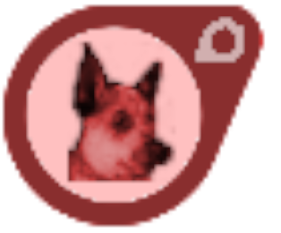
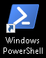
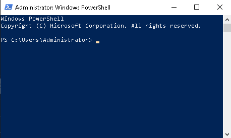
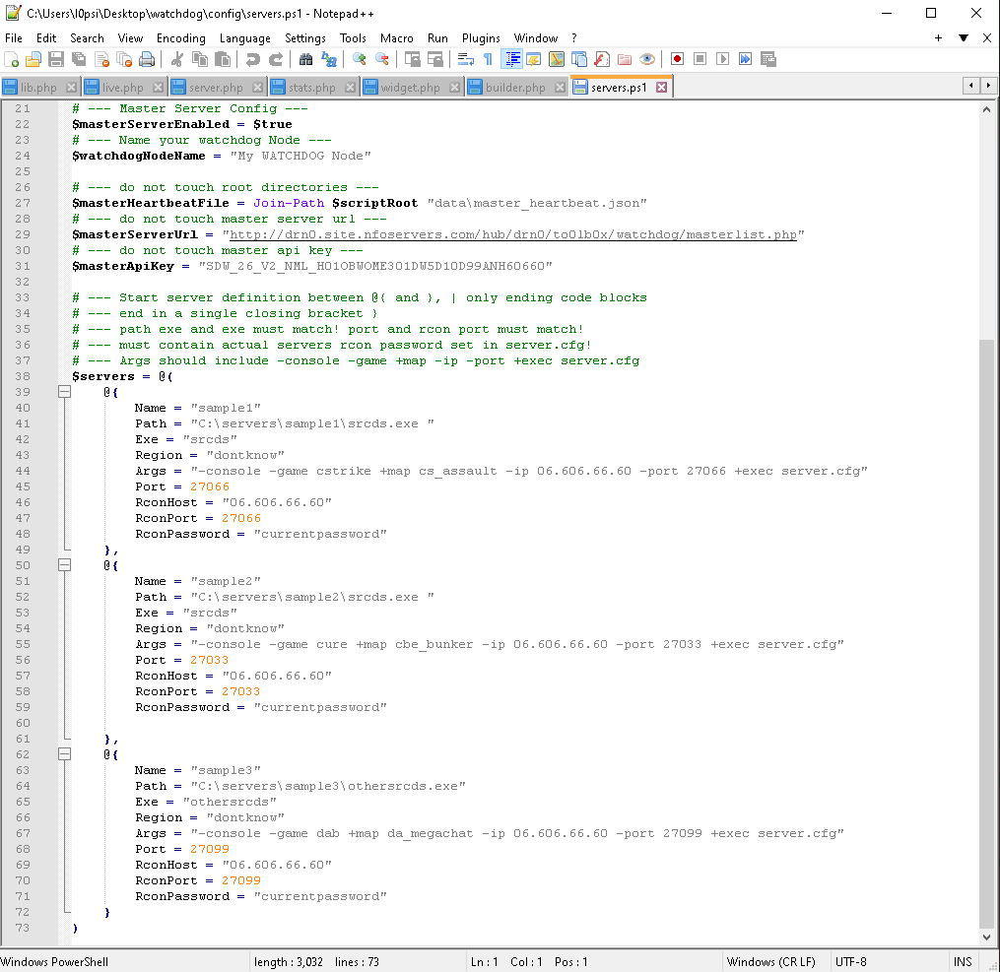
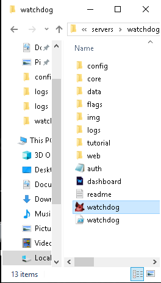
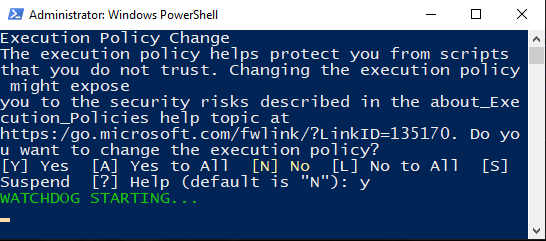
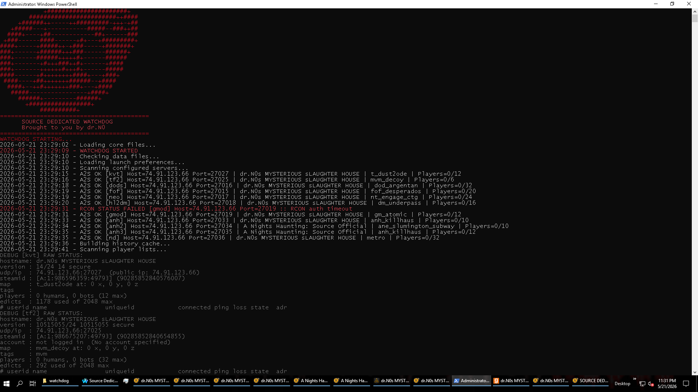
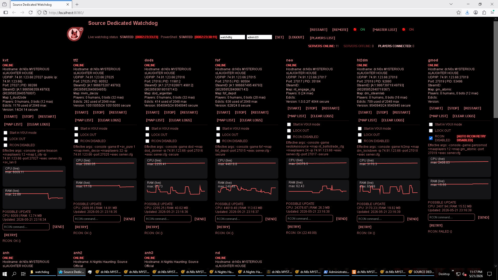

|

|
==========================================
= SOURCE DEDICATED WATCHDOG =
= Brought to you by dr.N0 =
==========================================
|
Introductory \____________________________
This guide will show you how to install and configure
the source dedicated watchdog to your virtual or dedicated servers
and watch your own active source engine dedicated servers with some
control.
|
===================================================================
Package Information \______________________________________________
After downloading the software watchdog.zip package and decompiling
the file system inside should contain
config/servers.ps1
watchdog.exe
watchdog.ps1
these 3 files configure and operate watchdog entirely.
|
====================================================================
Step One \__________________________________________________________
open a plain power shell console. this will be used initially to open
local area network access to the firewall for the watchdog software.
without this step initially the power shell software will not be able
to build the dashboard or handle the user or source engine dedicated
server data activity.

firewall step for LAN access is:
in PowerShell Run as Administrator

run this command line below____________________________
netsh http add urlacl url=http://+:8080/ user=Everyone
after this step is completed run this next step commandline
right after.
run this command line below_________________________________________________________________________________________
New-NetFirewallRule -DisplayName "Watchdog Dashboard" -Direction Inbound -LocalPort 8080 -Protocol TCP -Action Allow
after this second command line is successful
close the power shell console when it is completed.
|
===================================================================
Step Two \_________________________________________________________
After step one is complete OPEN your config/servers.ps1 file
preferably in NOTEPAD ++ or other coding software to prevent breaking
syntax.

you will see this code block
===================================================================
# --- Server Definitions ---
# Set RconPassword for each server to enable player monitoring and custom RCON commands.
$servers = @(
@{
Name = "sample1"
Path = "C:\servers\sample1\srcds.exe "
Exe = "srcds"
Region = "dontknow"
Args = "-console -game cstrike +map cs_assault -ip 06.606.66.60 -port 27066 +exec server.cfg"
Port = 27066
RconHost = "06.606.66.60"
RconPort = 27066
RconPassword = "currentpassword"
},
@{
Name = "sample2"
Path = "C:\servers\sample2\srcds.exe "
Exe = "srcds"
Region = "dontknow"
Args = "-console -game cure +map cbe_bunker -ip 06.606.66.60 -port 27033 +exec server.cfg"
Port = 27033
RconHost = "06.606.66.60"
RconPort = 27033
RconPassword = "currentpassword"
},
@{
Name = "sample3"
Path = "C:\servers\sample3\othersrcds.exe"
Exe = "othersrcds"
Region = "dontknow"
Args = "-console -game dab +map da_megachat -ip 06.606.66.60 -port 27099 +exec server.cfg"
Port = 27099
RconHost = "06.606.66.60"
RconPort = 27099
RconPassword = "currentpassword"
}
)
===================================================================
The information in these code blocks needs to be changed to match Your current
active servers at hand. you can add as many code blocks as you have servers that
are currently active.
[NOTE] You should set each server with -console and manage VGUI startups with
the dashboard. the setting with stick until watchdog is restarted.
[NOTE] exe name MUST match the launching exe thats in the path folder for the mod
[NOTE] rcon password must be set to each individual servers ACTUAL rcon password.
rcon port matches your actual port for the server. rcon host is the servers ip.
|
===================================================================
Step Three \_______________________________________________________

once the code blocks are updated to your current active server or servers,
Run the watchdog software by clicking the watchdog.exe.
this should start the watchdog completely, taking up to 2 to 3 minutes
launching the default web browser and opening the dashboard.html via
http://localhost:8080/
OR just launchwatchdog.ps1 file as administrator.
-------------------------------------------------------------------
a power shell console should start up when it initially loads up
[NOTE] power shell may prompt you to allow the watchdog softwares use.
type y and hit enter if you are prompted with the dialogue.

if successful red text should display Starting Watchdog.
following an onloading process similar to
WATCHDOG STARTING...
2026-04-30 21:55:45 - Loading core files...
2026-04-30 21:55:45 - WATCHDOG STARTED
2026-04-30 21:55:45 - Checking data files...
2026-04-30 21:55:45 - Loading launch preferences...
2026-04-30 21:55:46 - Scanning configured servers...
2026-04-30 21:55:50 - A2S OK [kvt] Host=74.91.123.66 Port=27027 | dr.N0s MYSTERIOUS sLAUGHTER HOUSE | t_hotel | Players=0/12
2026-04-30 21:56:13 - Building history cache...
2026-04-30 21:56:19 - Scanning player lists...
2026-04-30 21:56:24 - Creating dashboard redirect file...
2026-04-30 21:56:24 - Starting dashboard web server on port 8080...
2026-04-30 21:56:27 - Dashboard started on port 8080
2026-04-30 21:56:27 - Validating dashboard health...
2026-04-30 21:56:29 - Dashboard startup phase complete.
2026-04-30 21:56:29 - Startup validation phase...
2026-04-30 21:56:29 - kvt already running (PID 16996)
--- this window demonstration is official fully initialized at this point.
the last server is either started or already running and everything is
established in the dashboard.

scale this window down and tuck it somewhere or minimize. DO NOT CLOSE IT.
[!] this console stays open at all times when actively running[!]
to stop the programming just exit the watchdog power shell console out.
[if suspected still running just open task manager and stop Power Shell
as an active task from running.
if you used watchdog.ps1 to start the software instead of the watchdog.exe
then
open a new web browser and display your dashboard panel.
|
====================================================================
Dashboard Handling \________________________________________________
dashboard connection display-----------
to view the dashboard from the start use this web browser address
on the server itself thats running the servers.
http://localhost:8080/ for local server management
or
ServerIP:8080
e.g http://11.234.56.78:8080/ for remote server management
to view the panel after the initial start up from anywhere on the internet
use this url format
ServerIP:8080 e.g http://11.234.56.78:8080/ for remote server management

=====================================================================
Foot Notes and Information \_________________________________________
If everything is coded correctly you should see a dashboard
all servers live active information including active players
listed at the bottom.
if a server is not already on within 1 - 3 minutes
the offline server should automatically be established again.
[!]if a server does not restart automatically there could be code issues
during compile - check your servers.ps1 config file
or submit an official bug report[!]
|
------------- TIPS AND FAQ -------------------
after the initial power shell console opens PLEASE WAIT a few minutes
for the programming to finish, the dashboard will read 500 Internal Error.
refresh the dashboard web view every 30 seconds.
the dash board should come to life over time and the
dashboard itself refreshes automatically every 5 seconds when fully established.
you can toggle remote access with the remote button. on means you
CAN connect from anywhere
off means you can CAN ONLY connect via localhost from the actual server itself.
shut down the power shell console leave the dash board browser open.
then make server changes or updates.
then restart the watchdog.ps1 file as administrator again.
or use the lock server button after you STOP a server. itll stay off.
click the LOCK Server off and click START to start the server after quarantine.
[!] if servers are already running and you start watchdog, if its starting
duplicate servers something is wrong and file configuration could be broken.
check syntax' and code for issues compiling. [!]
use -console command to start a source dedicated server fully into online
status. in VGUI you will NEED to press the start button physically.
manage your VGUI start up from within watchdog
[!] REMOTE DESKTOP AND NETWORKING MAY BE DELAYED! ONLY CLICK BUTTONS
ONCE AND WAITING FOR RESPONSE give time and check logs if you must
all button responses should always follow through if they look to have not worked.
if time has passed and it looks to have not then click again but be warey of
what functions your running while you use the software [!]
To keep the power shell window open after crash by chance.
use this example
open powershell and run
powershell -NoExit -ExecutionPolicy Bypass -File "C:\Users\Administrator\Desktop\watchdog.ps1"
[!] data and info can sometimes become buggy. its best to restart watchdog once a day
in the total deepest backend through all bugginess a true set up IS ALWAYS working
at its core.
you SHOULD AT LEAST ALWAYS
-have servers restarting when theyre offline
-have Online statuses for online servers.
-have working web browser widgets for each server regardless of broken data states.
---- if these 3 features are not working watchdog is broken or not working correctly.
submit official bug reports if servers are not handling these core features correctly.
---- do not tamper with any of the files for watchdog
ONLY alter watchdog/config/servers.ps1 to set up active server details [!]
==========================================================================
Conclusion \______________________________________________________________
With this you should have watchdog running and ready to go.
if you need assistance in setting up the software etc feel free to contact
dr.N0 at any of these addresses
http://drn0.site.nfoservers.com/hub/drn0/motdpage.php
https://gamebanana.com/tools/22368
dr.N0 STEAM ACCOUNT
https://steamcommunity.com/id/dr_n0
|
|